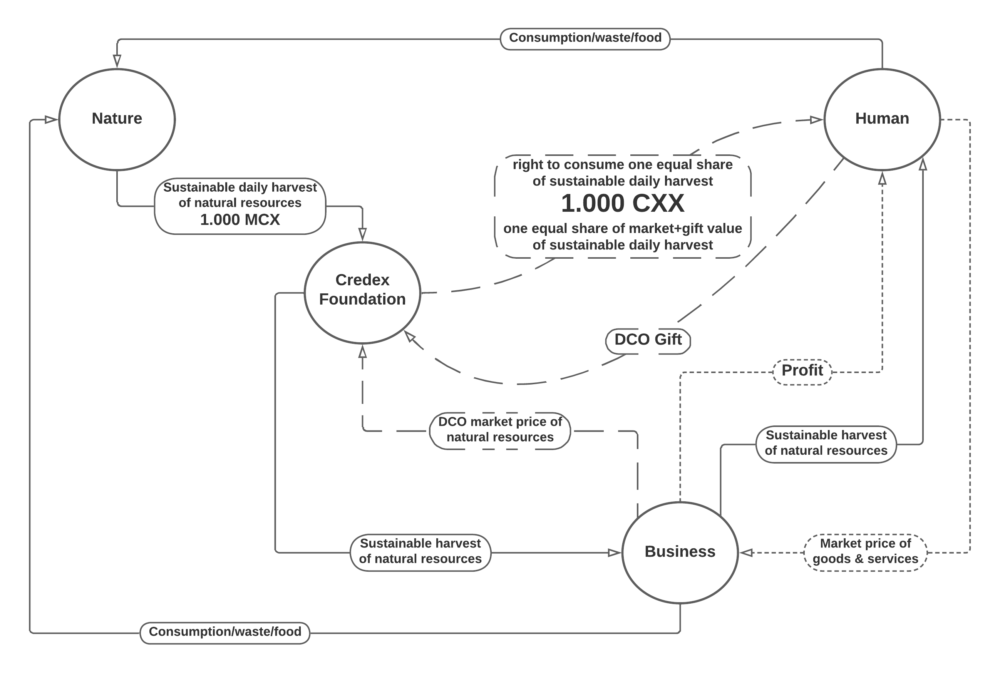

Your data irrevocably belongs to you. Your shared data, such as credexes, belong to you and your counterparty. The ecosystem provides cryptographically secure storage and sharing of any type of data using publicly auditable code. The ecosystem enables sovereign humans to set their own granular preferences for data privacy and data sharing.
Every human deserves to be anonymous sometimes. There is no reason to restrict public information based on someone's desire to remain anonymous in the fact that they have requested it.
On the other hand, many digital interactions require different levels of verification and security. Allowing anonymous bank accounts, for example, would be a recipe for disaster because it would remove accountability. There are also many cases where simple verification that the data is being requested by a real human (like a captcha) is all that is required, but anonymity is still desirable and agreeable to both parties.
The credex ecosystem enables granular, human-centric controls for anonymity, privacy, and security that can be modified to meet any need.
The shared ledger is the core of the ecosystem, and is the reference point for transactions, wealth circulation and accumulation, and identity management. The credex ecosystem and the shared ledger cryptographically bind data to sovereign humans, with no backdoor access.
The implementation and evolution of the ecosystem and the shared ledger requires the existence of a trusted intermediary, with trusted governance and decision making processes. This intermediary is required in order to set the foundational conditions that enable the ecosystem to exist, and to govern the specific rights and responsibilities of members.
This trusted intermediary is the Credex Foundation. The Foundation is democratically governed under the principle that every member has one equal voice in these decisions that affect us all. The ways that this principle could be implemented are varied and will evolve, but the focus of one sovereign human equals one sovereign vote will always guide Foundation governance.
The Credex Foundation does not lead the ecosystem. The Credex Foundation is the foundation of the ecosystem. It is essential that the foundation be strong and stable, but unless something has gone wrong, we should barely notice it.
The Credex Foundation is the reference point for the flow of natural resources entering the organic economy. The Foundation creates a market by bifurcating the natural resources from the right to consume them. The resources themselves are purchased by businesses who compete with each other for access to these resources. This competition sets their market value. In the same gesture, the Foundation distributes the right to consume these resources equally to all. This is done by distributing the value received from the competing businesses (and DCO gifts) equally to all DCO participants.
This distribution of value is what provides every DCO participant with one equal share of the wealth entering the organic economy today. The value that is distributed to each participant is always 1.000 CXX. Participants use this credcoin value to purchase from businesses, completing the loop, and anchoring the value of one credcoin firmly in market-based reality.
The Credex Foundation channels the heartbeat of the DCO through the primary circulatory system of the organic economy.
The digital asset protocols of the ecosystem are built on the strengths explored above:
These strengths enable highly reliable and secure records of asset ownership to be entered into the shared ledger in an economically accurate manner. These are not digital assets, they are digital records of asset ownership, linked as closely as is technically feasible with specific real or digital assets.
The record of digital ownership of an asset is intended to match and help cryptographically enforce the legal reality of ownership. Eventually, with enough publicly auditable and hardened code, and enough demonstrated reliability, these records on the shared ledger will become a trusted legal reference point in and of themselves.
Based on these records of digital assets, the ecosystem builds multi-denominational, customizable balance sheets from the ground up. The exchange of a credex can trigger the transfer of ownership of a specific digital asset-marker, smoothing transactions and enabling fully granular and privacy-conscious tracking of any asset through the chains of value creation all the way to consumption.
The credex ecosystem utilizes cryptographic technologies to provide you with secure and exclusive access to your data, with protocols and granular permissions that enable you to share it seamlessly with other members and corporations, as well as protocols (such as credex itself) that enable counterparties to cooperatively create data, and own it together under customizable and freely agreed conditions.
With publicly auditable code, the ecosystem expects critical feedback, security analysis, and bug reporting, and filters this feedback to prioritize protecting human sovereignty. Sovereignty includes accountability for one's actions, and the right to be left alone in the absence of due democratic and judicial process. The Credex Foundation exists to protect the sovereignty of its members, and the development and deployment of cryptographic protocols to execute this governance mission within the ecosystem is of primary importance.
This purpose, as well as all the practical tools and powers of the ecosystem, give credex a massive advantage in the corporate race for platform-level dominance, simply because the credex ecosystem is not owned by a profit-focused limited liability corporation. Extracting profit through monopolistic dominance of a data ecosystem, and the access to user data that this enables, is simply not of collective benefit.
And so human sovereignty, expressed through democratic process, rules and centres the collective platform of the credex ecosystem. The expressed purpose of the platform, and its democratic governance, is to empower all with a sovereign foundation to grow and profit from, and then stay mostly out of our way.
Credex has a magnetic case for member adoption, with privacy and security assurances far beyond the usual corporate black box. Not only does the purpose of the ecosystem align with human needs for respect and privacy, the effectiveness of the codebase in achieving its purpose can be audited and publicly analyzed, criticized, and contributed to.
The corporate race over platform-level dominance may not be of collective benefit, but giving corporations free reign to operate within the ground rules of a democratically-governed ecosystem, and take advantage of every potential it offers, is of great collective benefit. The ecosystem enables anyone, corporate or human, to create and host their own environment within the ecosystem, starting with a credex account and growing from there. The kind of granular user and transaction data that becomes available when there is a core digital identity in the background of every one of your customers, replete with personal data of every kind, is an extremely attractive proposition.
Giving members cryptographically secured control of their own data means that corporations can't sell it. However, consumers are happy to give data of all kinds to corporations who earn their trust, to use for the purposes agreed between the corporation and the consumer. When a corporation earns a consumer's trust within the credex ecosystem, it can gain access to a treasure trove of secure, verifiable, and transparently shared data with the granting of simple permissions. When a corporation violates a consumer's trust, those customers and potential customers will simply take their business somewhere else, along with their data.
The native member-empowering features bestowed by the ecosystem position credex to become the core digital identity management platform for members, and position other corporate entities to profit by adopting credex. The ecosystem achieves this simply by putting members ourselves, rather than corporations owned by others, in the core position of power and responsibility in our own digital lives.
The credex ecosystem has the power to fundamentally transform the entire financial industry, changing the very fabric of the banking system and eliminating the need for outside sovereigns altogether in the financial realm. Once democracy-based processes set the framework, they can pretty much stay out of our way as we each create the future we want for ourselves in cooperative and systemically healthy exchange with each other.
One of the first natural consequences of entering the ecosystem can be a growing sense of stable independence from toxic systems. Whether your concern is environmental sustainability, freedom, prosperity, human rights, growth of capital, diversity, economic justice, privacy, security, or all of the above, the credex ecosystem provides independence from systems that have proven unable to express these values in effective ways in the modern world.
With credex we have a new option. Simply by directing the flows of our economic energy through the credex ecosystem, we energize systems that are fundamentally built on the values we care about most. As we enter the organic economy and build it through our exchanges, we open the horizons on vastly different futures for ourselves and our descendants on this earth and beyond.